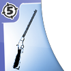

Mustang
Cuando tienes un caballo Mustang en juego, la distancia entre tú y los demás jugadores aumenta en 1, por lo que necesitarán un arma con mayor alcance para poder disparar contra ti. ¡Sin embargo, tú sigues viendo al resto de jugadores a la misma distancia!

Barril
Cuando la tienes en juego, te permite draw cuando te vayan a lanzar un

: funciona automáticamente en modo "fácil"; en otros modos, hay que robar de la baraja. Si robas una carta con la marca

, competirás con [

]; en caso contrario, continúas como si nada. ¡El BARRIL te da una oportunidad adicional antes de usar las cartas que tienes en la mano! (Juega esta carta en el centro de la mesa)

Cárcel
Juega esta carta para encerrar a cualquier jugador (excepto al sheriff) en la cárcel.
Si estás en la cárcel, debes "desenfundar" justo antes de empezar tu turno: si robas una carta que tenga el símbolo
, habrás escapado y tu turno continuará con normalidad. De lo contrario pierdes el turno.

Dinamita
Juega esta carta delante de ti: la dinamita permanecerá un turno entero ahí. Al comienzo de tu siguiente turno (ya con la dinamita en juego), debes "desenfundar": si obtienes un símbolo

, la dinamita explotará (privándote de 3 puntos de vida); de lo contrario, pasará al siguiente jugador.

Mira telescópica
Si tienes en juego una Mira telescópica, la distancia a la que ves a todos los demás jugadores se reduce en 1. Esto afecta a todas las cartas cuyo efecto depende de la distancia (incluidas tus armas). ¡Sin embargo, tú sigues viendo al resto de jugadores a la distancia normal!

Schofield
Esta arma aumenta tu alcance de disparo a 2.
No puedes tener más de un arma a la vez: si utilizas otra distinta, se descartará la anterior.

Remington
Esta arma aumenta tu alcance de disparo a 3. No puedes tener más de un arma a la vez: si utilizas otra distinta, se descartará la anterior.

Carabina revólver
Esta arma aumenta tu alcance de disparo a 4. No puedes tener más de un arma a la vez: si utilizas otra distinta, se descartará la anterior.

Winchester
Esta arma aumenta tu alcance de disparo a 5. No puedes tener más de un arma a la vez: si utilizas otra distinta, se descartará la anterior.

Volcanic
Con esta carta en juego puedes jugar cualquier número de cartas ¡BANG! en tu turno. Puedes jugarlas contra uno o varios objetivos, siempre que estén a una distancia de 1.

Escondite (DODGE CITY)
¡Mismo efecto que MUSTANG, pero puedes tener ambas!

Binoculares (DODGE CITY)
¡Mismo efecto que MIRA, pero puedes tener ambas!